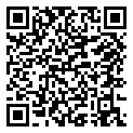

🔵 5ème · Période 1 · Quiz
Quiz — Découverte des objets techniques
Teste tes connaissances sur les objets techniques, les besoins, les fonctions d'usage et d'estime.
🔗 Lien direct vers cette page

51Q
Scanne le QR code, ou saisis ce code sur la page d'accès direct du site.
https://lyceefrancaisdetananarive.github.io/technologie/go.html?c=51Q